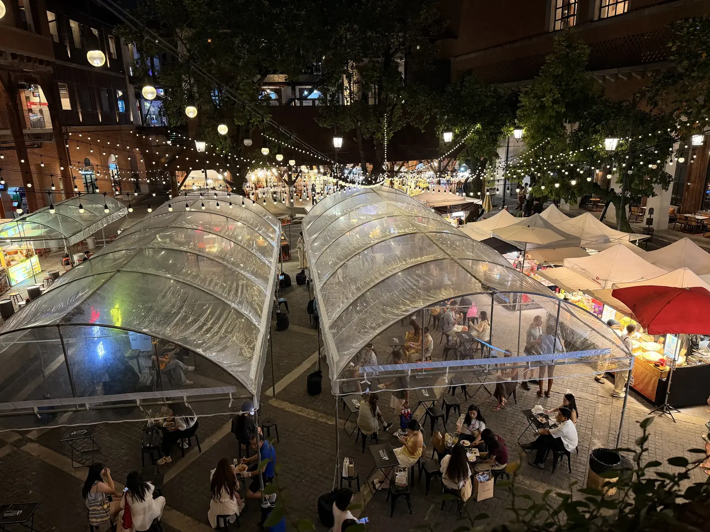
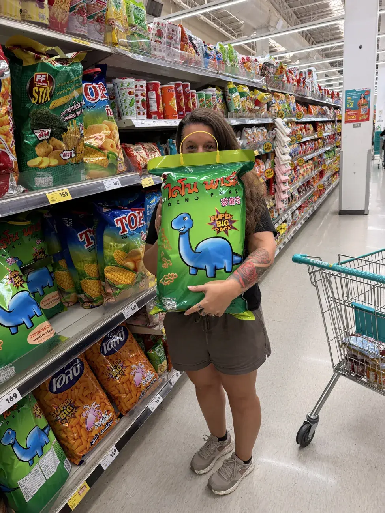

Lifehacks.
Kleine Handgriffe, die uns unterwegs Zeit und Nerven sparen – vom ersten Bankomaten bis zum nächsten Ortswechsel.
Ein guter Reisetipp fällt oft erst auf, wenn du ihn gerade brauchst: am Bankomaten, vor einem frühen Check-out oder mit leerem Akku in einer fremden Stadt. Wir haben hier die Dinge gesammelt, die sich für eine längere Reise wirklich lohnen. Nimm mit, was zu deiner Route passt; der Rest darf liegen bleiben.
Geld unterwegs
Die kleinen Gebühren summieren sich schneller als ein teures Abendessen. Hier lohnt sich eine Minute Aufmerksamkeit.
In der Landeswährung bezahlen
Wenn Terminal oder Bankomat eine Umrechnung in Franken anbietet, wählen wir die Landeswährung. So übernimmt die Kartenfirma den Wechselkurs statt des Automatenbetreibers. Den angezeigten Kurs und allfällige Gebühren prüfen wir trotzdem. Visa erklärt diese Währungsumrechnung.
Zwei Karten getrennt aufbewahren
Eine Karte für den Alltag, eine als Reserve an einem anderen Ort: Das ist unterwegs hilfreicher als die perfekte Karte auf dem Papier. Wenn eine verloren geht oder gesperrt wird, bleibt die zweite nutzbar. Unsere ausführliche Übersicht findest du bei den Reisekreditkarten.
Am Bankomaten die Gebühr lesen
Manche Automaten verlangen zusätzlich zur Gebühr deiner Bank eine eigene Abhebegebühr. Die wird meist vor der Auszahlung angezeigt. Ist sie hoch, brechen wir ab und suchen einen anderen Automaten. Viele kleine Abhebungen können teuer werden.
Gepäck, das mitspielt
Jedes Teil, das du täglich suchen musst, kostet unterwegs Zeit. Eine einfache Ordnung macht mehr aus als neue Ausrüstung.
Das Ankunftsfach packen
Pass, Ladegerät, eine frische Garnitur, Medikamente und die Adresse der Unterkunft gehören an einen Platz, den du sofort erreichst. So musst du nach einer langen Fahrt nicht den ganzen Rucksack ausräumen.
Vor jedem Ortswechsel zehn Minuten prüfen
Ladegeräte an der Steckdose, Sachen im Bad und Wäsche auf dem Balkon sind die Klassiker. Wir gehen vor dem Auschecken einmal vom Bett bis zur Tür durch und prüfen jede Steckdose.
Weniger, dafür schnell trocknend
Auf langen Reisen zählt nicht die Zahl der Outfits, sondern wie leicht sich Kleidung waschen und trocknen lässt. Packe für den Alltag und ergänze nur, was du tatsächlich häufig trägst. Unsere Packliste hilft beim Aussortieren.
Ankommen ohne Datenstress
Die erste Stunde in einer neuen Stadt wird entspannter, wenn die wichtigsten Informationen schon auf dem Telefon liegen.
Die nächste Adresse offline speichern
Vor der Fahrt machen wir einen Screenshot mit Adresse und Kartenpin der Unterkunft. Noch besser ist die Adresse in der Landessprache. Dann kannst du sie auch ohne Empfang zeigen.
Karten vor der Fahrt herunterladen
Offline-Karten sind besonders auf der Fahrt vom Flughafen oder Busbahnhof nützlich. Lade die Gegend vorab im WLAN herunter und teste, ob deine Unterkunft darauf zu finden ist.
Den Abholpunkt prüfen
Bei Fahrdiensten ist der Abholpunkt nicht immer dort, wo du gerade stehst. Erst den Pin und das Kennzeichen abgleichen, dann einsteigen. Wenn ein Fahrer einen anderen Treffpunkt vorschlägt, klären wir das in der App.
Dokumente & Daten
Bei wichtigen Unterlagen zählt nicht ein raffinierter Trick, sondern ein verlässliches Backup.
Pass und Versicherung doppelt sichern
Wir halten wichtige Dokumente offline auf dem Telefon und zusätzlich in einem geschützten Cloud-Speicher bereit. Sensible Dateien gehören nicht in einen öffentlich freigegebenen Ordner. Eine Papierkopie des Passes lagert getrennt vom Original.
Buchungen für den Reisetag griffbereit halten
Bei Einreise, Check-in oder einer Zugkontrolle hilft es, die aktuelle Bestätigung schnell öffnen zu können. Speichere Tickets und Policen als PDF oder Screenshot offline; eine App allein braucht manchmal gerade dann Internet, wenn keines da ist.
Notfallkontakte auf Papier notieren
Eine kleine Karte mit Kontaktperson, Versicherungsnummer und wichtigen medizinischen Angaben passt ins Portemonnaie. Sie hilft auch dann, wenn das Telefon leer oder gesperrt ist. Persönliche Daten darauf sollten auf das Nötige begrenzt bleiben.
Von A nach B
Ein bisschen Vorbereitung macht aus einem Reisetag noch keinen Stundenplan. Sie verhindert aber die üblichen Überraschungen.
Die letzte Verbindung zuerst prüfen
Für die Ankunft zählt nicht nur die Abfahrtszeit. Schau vor der Buchung, wie du vom Bahnhof, Hafen oder Flughafen zur Unterkunft kommst – gerade wenn du spät landest oder eine Fähre nur wenige Male am Tag fährt.
Bei getrennten Tickets Luft lassen
Bei zwei separat gebuchten Flügen schützt dich ein verpasster Anschluss normalerweise nicht wie bei einem durchgehenden Ticket. Plane Zeit für Einreise, Gepäck, erneuten Check-in und Verspätungen ein.
Preis und Treffpunkt vor der Fahrt klären
Bei einer Fahrt per App prüfen wir Kennzeichen und Abholpunkt. Bei einem Taxi ohne App klären wir vor dem Einsteigen, ob Taxameter oder Festpreis gilt. So beginnt die Ankunft ohne Diskussion am Ziel.
Gesund bleiben
Die nützlichsten Vorbereitungen sind oft ganz unspektakulär: erreichbar sein, gut schlafen und die wichtigen Dinge griffbereit haben.
Versicherungsnummer und Hotline offline speichern
Lege die Police und die Nummer für medizinische Hilfe so ab, dass du sie ohne Internet öffnen kannst. Vor der Reise lohnt sich ein Blick darauf, wann die Versicherung vor einer Behandlung kontaktiert werden soll. Unser Beitrag zur Auslandskrankenversicherung geht genauer darauf ein.
Medikamente mit Verpackung mitnehmen
Regelmässig benötigte Medikamente gehören ins Handgepäck, möglichst in der Originalverpackung. Prüfe vor Grenzübertritten die Regeln des Ziellands und kläre bei verschreibungspflichtigen Mitteln, ob du eine Bescheinigung brauchst. Das EDA empfiehlt Originalverpackung und Rezept.
Die persönliche Reiseapotheke klein halten
Packe Medikamente und Hilfsmittel ein, die du selbst regelmässig brauchst oder nicht leicht ersetzen kannst. Für alles Weitere klärst du vor der Reise mit einer medizinischen Fachperson, was zu deiner Route und deiner Gesundheit passt. Mehr dazu bei Gesundheit & Impfungen.
Schlafen & Energie
Wer übermüdet ankommt, hat wenig von einer günstigen Unterkunft oder einer vollgepackten Tagesplanung.
Das kleine Schlafset griffbereit halten
Ohrstöpsel, Schlafmaske und eine leichte Schicht für kalte Busse brauchen wenig Platz. Sie gehören ins Handgepäck, nicht ganz unten in den grossen Rucksack.
Nach einer Nachtfahrt Luft lassen
Wenn ein Bus oder Flug die Nacht kostet, planen wir für den Ankunftstag keine enge Folge von Touren und Transfers. Erst ankommen, etwas essen und den nächsten Schritt sortieren.
Beim Zimmer genauer hinschauen
Ein günstiger Preis hilft wenig, wenn das Zimmer direkt an einer lauten Strasse liegt und du mehrere Nächte bleibst. Lies die neueren Bewertungen zu Lärm, Klimaanlage und Sauberkeit, bevor du buchst.
Unterkünfte & Essen
Hier entsteht ein grosser Teil des Reisealltags. Ein guter Standort und ein realistischer Gesamtpreis zählen mehr als ein einzelner Rabatt.
Den Gesamtpreis vergleichen
Schau vor der Buchung auf Steuern, Reinigungsgebühren, Frühstück und Stornobedingungen. Zwei Zimmer mit ähnlichem Nachtpreis können am Ende unterschiedlich viel kosten.
Die Lage auf der Karte prüfen
Eine Unterkunft ausserhalb des Zentrums kann gut passen. Rechne aber Fahrten, Zeit und die letzte Verbindung am Abend mit ein. Ein günstiges Zimmer ist kein Gewinn, wenn du für jeden Weg ein Taxi brauchst.
Für die Ankunft etwas Einfaches einplanen
Nach einem langen Reisetag wollen wir nicht zuerst das beste Restaurant der Stadt finden. Ein Markt, ein kleiner Laden oder ein unkompliziertes Lokal in der Nähe reicht. Danach können wir in Ruhe entdecken.
Telefon & Technik
Das Telefon ist Karte, Ticket, Kamera und manchmal sogar Portemonnaie. Ein kleiner Plan B lohnt sich.
Übersetzungen vorher laden
Lade die Sprachen für dein nächstes Land in deiner Übersetzungs-App herunter. Das hilft bei Speisekarten, Schildern und kurzen Fragen, wenn du gerade keine Datenverbindung hast. Teste die Offline-Funktion vor der Abfahrt.
Die SIM vor der Ankunft planen
Prüfe vor einem neuen Land, ob dein Telefon eSIM unterstützt, was dein Tarif fürs Roaming verlangt und wo du vor Ort eine lokale SIM bekommst. Der günstigste Tarif hilft dir wenig, wenn du am Flughafen erst einmal keine Adresse öffnen kannst. Mehr dazu in unserem SIM-Karten-Guide.
Eine Powerbank als Reserve mitnehmen
Bei einem langen Reisetag halten Karten, Kamera und mobile Tickets nicht immer bis zum Abend durch. Lade die Powerbank vor jeder Weiterfahrt auf und packe das passende Kabel dazu. Für Flüge prüfst du die aktuellen Regeln der Airline fürs Handgepäck.
Fotos auf zwei Orten sichern
Ein automatisches Cloud-Backup ist gut, eine zweite Kopie auf Laptop oder externer SSD noch besser. Kontrolliere stichprobenartig, ob sich die Dateien öffnen lassen, bevor du eine Speicherkarte löschst. Das ist weniger aufregend als ein neues Gadget, aber deutlich nützlicher.
Wenn etwas weg ist
Die besten Sicherheitsvorkehrungen fallen im Alltag kaum auf. Sie helfen, wenn Karte, Pass oder Telefon plötzlich fehlen.
Geld und Karten nicht zusammen tragen
Eine Reservekarte und etwas Bargeld bleiben getrennt vom Portemonnaie, das du täglich nutzt. So ist bei einem Verlust nicht sofort alles weg. Den Aufbewahrungsort der Reserve merken wir uns vor dem Weiterziehen.
Sperrnummern ausserhalb des Telefons sichern
Wenn das Telefon zusammen mit der Karte verschwindet, nützt die Nummer in einer App wenig. Notiere die Sperrwege deiner Banken und den Kontakt zur Versicherung zusätzlich auf Papier oder bei einer Vertrauensperson.
Verlorenes Telefon vorbereiten
Aktiviere die Ortungs- und Sperrfunktion deines Geräts, richte einen starken Code ein und prüfe, ob deine wichtigen Konten auch ohne dieses Telefon wiederherstellbar sind. Der Zeitpunkt dafür ist vor der Reise, nicht nach dem Verlust.
Der Alltag dazwischen
Nicht jeder nützliche Reisetipp hat mit Geld oder Technik zu tun. Einige machen einfach den nächsten Tag leichter.
Wäschetage vor dem Weiterziehen planen
Wenn wir am nächsten Morgen abreisen, geben wir nasse Kleidung nicht erst am Abend in die Wäscherei. Vorher fragen wir, wann sie fertig ist und ob Trocknen im Preis steckt.
Eine kleine Reserve im Tagesrucksack
Wasser, Taschentücher, Ladekabel und ein leichter Regenschutz retten oft einen Tag, der anders läuft als geplant. Was hinein gehört, hängt vom Klima und von der Strecke ab.
Bei langen Wegen Puffer lassen
Ein Umstieg sieht auf der Karte leicht aus, bis Verkehr, Regen oder eine verspätete Fähre dazwischenkommen. Für Grenzübertritte und getrennt gebuchte Flüge planen wir bewusst mehr Zeit ein.
Der Kurzcheck vor dem nächsten Ortswechsel
Diese sechs Punkte gehen wir durch, bevor wir die Unterkunft verlassen. Du kannst die Liste auf dem Telefon speichern.
- Pass, Karten und Bargeld an den richtigen Plätzen?
- Tickets, Unterkunftsadresse und Versicherung offline verfügbar?
- Alle Ladegeräte aus den Steckdosen gezogen?
- Bad, Balkon und Schrank noch einmal geprüft?
- Telefon und Powerbank geladen?
- Weg zum nächsten Check-in und genug Zeit für den Umstieg geklärt?

Vor der Weiterreise kurz innehalten.
Wo ist der Pass? Ist die Adresse der nächsten Unterkunft offline gespeichert? Ist alles geladen? Diese drei Fragen brauchen kaum eine Minute und können viel Sucherei ersparen.
Leichter reisen beginnt vor dem Aufbruch.
Wir wollen auf Reisen nicht alles durchplanen. Aber bei Geld, Dokumenten und der ersten Stunde an einem neuen Ort lohnt sich ein bisschen Vorbereitung. Danach bleibt mehr Raum für das, weswegen wir unterwegs sind.